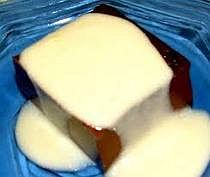

Puding Busa Coklat

Bahan:
- 2 bungkus (14 gr) agar-agar bubuk warna cokelat
- 2 sdm cokelat bubuk
- 200 gr gula pasir
- 1/8 sdt garam
- 1 liter susu
- 5 butir telur, ambil bagian putih telur, lalu kocok kaku
- 150 gr nanas kalengan, tiriskan, lalu potong kasar
Bahan saus leci:
- 1 kaleng (427 gr) leci, blender beserta air buahnya
- 350 ml susu cair
- 2 sdt essence mint
- 3 butir kuning telur ayam
- 1 sdm tepung maizena, larutkan dengan 1 sdm air
Cara membuat:
- Aduk rata agar-agar bubuk, cokelat bubuk, gula pasir, dan garam.
- Tuangkan susu sedikit demi sedikit sambil aduk terus hingga semua bahan larut.
- Didihkan larutan di atas api sedang sambil terus diaduk agar susu tidak pecah dan agar-agar matang. Angkat, sisihkan.
- Tuangkan larutan agar-agar mendidih sedikit demi sedikit ke dalam putih telur kocok sambil terus diaduk dengan mixer hingga rata. Tambahkan potongan nanas kalengan, aduk rata.
- Tuangkan adonan agar-agar ke dalam loyang bervolume 2000 ml yang sudah dibahasi air matang. Biarkan dingin dan simpan dalam lemari pendingin hingga waktu penyajian.
- Sementara untuk saus leci, cara membuatnya didihkan jus leci, susu cair, dan essence mint sambil diaduk terus agar susu tidak pecah. Ambil sedikit susu panas, tuangkan ke dalam kuning telur, lalu aduk hingga rata. Tuangkan kembali kuning telur ke dalam larutan susu panas. Masukkan larutan maizena untuk mengentalkan saus. Didihkan sekali lagi hingga semua bahan matang. Angkat dan biarkan dingin.